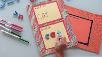
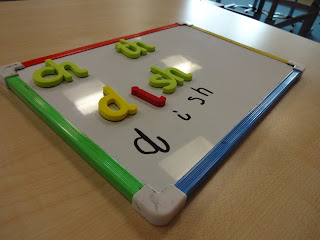
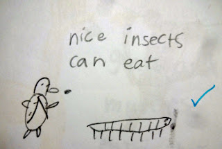
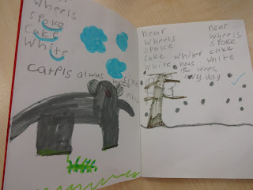
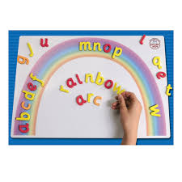
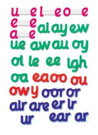
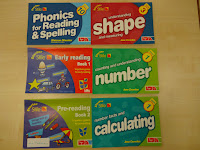
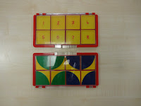
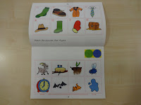
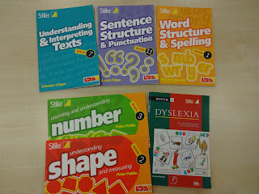

Dyslexia: a guide for parents
Clear information and practical ideas for families who think, or know, their child is dyslexic.
My child is dyslexic what do I do now?
Whether you wait for a formal diagnosis or you know from your own observations that your child meets the criteria for dyslexia, realising that you child is dyslexic can be difficult to come to terms with.
You may have suspected it for some time but hoped that things would improve in time or you may have been falsely reassured by teachers and other educational professionals that there is nothing to worry about. Even if you know you are dyslexic yourself there is always the hope that your child will not be affected in the way you were. For other parents, who are unaware of their own dyslexia, the world of dyslexia can be new and daunting.
1. Try not to panic
While dyslexia is a lifelong condition, it is not a life sentence. As many websites try to point out it is a learning difference rather than a disability. While learning to read and write will be a much harder process than it is for most children, dyslexic children can learn if they are taught in the right way. In addition, many dyslexics have strengths that in life and the work place make them successful people.
Try to keep things in perspective, while school is an important part of a child’s life, it is only one aspect of their life. A positive home life and relationships are very important, as are interests and activities outside school.
2. Encourage your child to do more of the things that they are good at and enjoy.
It is very tempting to pull out all the stops in trying to help your child ‘catch up’ through extra work at home and tutoring. However, don’t forget that school will be exhausting enough and often demoralising, without coming home to face more tasks that are difficult. We all need down time and to have time to do the things we enjoy. This energises us to face the things we find difficult. It is very important to preserve your child’s sense of self and confidence. In reality, it will be these interests and strengths that lead them into productive and happy adult lives.
3. Give yourself and your child time
Take time to read and understand dyslexia as fully as you can. There is a wealth of information and advice online and this can be overwhelming. It is important to understand that while there are principles that help all dyslexics, no one intervention or method can help all dyslexic children. Each child and family are different and what may be hugely successful with one child may not successful with another child.
Once you work out how best to support your child, it is worth remembering that you should allow your child to develop at their own pace and not allow the pressure of the school system to dictate. School systems set benchmarks of what your child should achieve at each age but these should only be considered as guidelines. In reality, there is plenty of time for your child to develop their literacy skills. It is better to build the foundation stages thoroughly rather than trying to rush ahead and try to ‘keep up’. Many dyslexics who receive consistent interventions from age 6 or 7 will have reasonable literacy skills by the time they are 10 or 11. Reading is easier to master with the right intervention, writing and spelling will take considerably longer.
4. Try to pinpoint your child’s strengths and weaknesses
This is very important in deciding what approach to take in supporting your child. You should try to utilise your child’s strengths while encouraging them to practice the skills they find difficult. Every dyslexic child is different and has a different combination of strengths and weaknesses. While multisensory methods are recommended for all dyslexic children, knowing whether your child has stronger visual or auditory skills will help your child make quicker progress. For example, if a child has a weak visual sequential memory using mnemonics to learn irregular high frequency words will be effective. However, if they have strong visual skills you may colour code letter patterns and encourage your child to visualise the word in their head.
5. Find ways for your child to receive systematic support for reading and spelling
Children with dyslexia are capable of learning to read and write they just need to be taught differently. The first step is to ask the school to provide specific dyslexia interventions for your child. These do need to be delivered outside the classroom individually or in small groups by a specialist teacher or an adult who has been trained to use a specific intervention. More repetitions or a slower pace of ordinary classwork will not help them to develop their literacy skills and they will only slip further behind. If the school is not able to provide adequate support then tutoring or support at home may be the only option. But as pointed out earlier think carefully about your child’s schedule, if they are overtired or favourite activities are cancelled in favour of tutoring it with be counterproductive. There are many options available both online and through workbooks, they vary widely in terms of cost and intensity of delivery. The key part is that they systematically teach letter-sound relationships and use multisensory methods. You may choose to use a specialist tutor but it is also possible for parents to provide appropriate support. Cost is not an indicator of how effective an intervention will be for your child, remember that there are many effective low cost methods to support dyslexia.

6. Develop your child’s intellectual skills apart from reading and writing
It is important that your child still continues to develop their other skills despite having difficulty with reading and writing. Children who are competent readers extend their vocabulary, learn about the structure of language and develop their imagination. If they read information texts they will extend their general knowledge. Very often dyslexic children end up lagging behind because they are often reading well below their grade level. Reading to your child, using audiobooks and video clips can help your child to learn age appropriate concepts and vocabulary. Spend time talking about stories and events to ensure your child understands them and makes connections. In terms of writing, it is good to scribe for your child from time to time so that they can develop their skills in composition rather than the focus always being spelling and handwriting. Videoing their ideas and then typing these up for child is another useful approach. Then the child can focus on editing and using interesting vocabulary. You can try voice to text applications to allow your child express themselves more freely than they can when writing themselves.
7. Believe your child will succeed in their own way Finally, staying positive and helping your child stay positive is so important. They will have their own negative feelings and those of both adults and children at school to contend with on a day to day basis. Try to keep your own concerns, frustrations and disappointments away from your child. Typically there is a ‘mourning’ process when you discover your child has a learning difficulties. This can bring to the surface many strong emotions, work through these and seek support when you need it. Accepting the child you have and not expecting them to be something they are not is vital for everyone’s wellbeing. It is fine to have high expectations as many dyslexics can pass exams and go to college or university. However, many have skills that will lead them into a whole range of practical careers. Enjoy and appreciate your child for who they are.
Have you heard of Stealth Dyslexia?
So many people are affected by dyslexia but many do not benefit from interventions because they do not meet our narrow view of dyslexia.
We think that if a child can read they can't be dyslexic, we don't realise the amount of effort that may be going into the task. Thanks to Brock and Fernette Eide for their excellent article which raises awareness about a whole group of students (and adults) who are often over looked.
Do you recognise yourself or others in this article?
Stealth Dyslexia: How Some Dyslexic Students Escape Detection
The Inside Track blog post by Brock and Fernette Eide Dyslexic Advantage Mar 04, 2015 Recently, The New Yorker magazine published an interview with Fumiko Hoeft, one of the world’s top dyslexia researchers. Hoeft (pronounced HAYfft) is a psychiatrist and brain scientist at the University of California San Francisco. In the article, she discussed research she’d done on individuals with an unusual-sounding condition—“stealth dyslexia.”
People with stealth dyslexia have problems sounding out (or decoding) words just like people with “classic” dyslexia. Yet unlike typical dyslexics, their scores on tests of reading comprehension are typically above average, or even very strong. What The New Yorker article doesn’t tell you is this: If people with stealth dyslexia can read with good comprehension, is it important to know about them? The answer is definitely yes! Students with stealth dyslexia often underperform their potential in the classroom. Yet they rarely receive the help they need. So parents and teachers really do need to know about this. “Stealth dyslexia” is a term we coined in 2005. At the time, we noted that these students typically “avoid the radar of detection” just like stealth airplanes. Since these students score well on reading comprehension tests, most people think they can’t be dyslexic. Yet these students also show the most classic feature of dyslexia: They struggle with phonics and decoding. For some time after we first described stealth dyslexia, people debated whether these individuals should really be thought of as dyslexic at all. Now we know the answer. As Hoeft told The New Yorker, she used fMRI scanners to study the brains of students with stealth dyslexia. She found that their brain wiring did indeed show the classic features of dyslexia. This confirmed they really are dyslexic. She also found that when they read, they show heightened activity in parts of the brain that help with executive function and self-control. Their comprehension appears to be strong because they compensate for their decoding problems by using their attention and problem-solving skills in especially active ways. Even with these superior thinking skills, students with stealth dyslexia often struggle in school. The following skills are particularly challenging:
- Reading new (and especially long) words
- Reading out loud
- Silent reading speed and accuracy
- Spelling
- Writing (both mechanics and the speed and quantity of output)
Because of their problems with these basic skills, they often have a hard time with these more complex tasks:
- Reading short passages (where they can’t use context to guess the words they can’t sound out—for example, questions and answers on multiple choice tests, or story problems in math)
- Reading passages on an unfamiliar topic (where they can’t use their background knowledge to guess the words they can’t sound out)
- Reading passages that contain many unfamiliar words or new terms (especially in the natural or social sciences, or subjects dealing with foreign cultures or languages)
- Keeping up with lengthy reading or writing assignments
For many students with stealth dyslexia, school challenges only become clear when the work load becomes very heavy or complex. That’s when they can no longer keep up just by increasing their effort. Often this may not be until high school or college. Many students with stealth dyslexia have problems with writing, but their reading challenges are missed, so they’re diagnosed with dysgraphia. Others are diagnosed with ADHD, because they make lots of “silly mistakes.” However, as Hoeft showed in her research, they typically have strong focus and attention. Because of these challenges, many students with stealth dyslexia require the same supports as other dyslexic students:
- Instruction in phonemic awareness and phonics, where progress is based on decoding ability, not comprehension
- Text-to-speech readers, especially for long reading assignments
- A good keyboarding program to help with spelling and writing
- Extra time on tests
- Individualized expectations for writing
While students with stealth dyslexia often struggle in school, they are typically extremely good thinkers and problem solvers. They often do very well as adults. So remember: When you see a bright student who understands most of what he or she reads, but who still struggles with oral reading, sounding out new long words, spelling, and often writing, think about stealth dyslexia.
About the Blogger Brock and Fernette Eide, Dyslexic Advantage co-founded the organization Dyslexic Advantage and are coauthors of The Dyslexic Advantage and The Mislabeled Child
HOW TO LEARN SPELLINGS
One of the reasons that many children struggle to learn spellings or use the words in their own writing is that their learning is PASSIVE rather than ACTIVE.
Copying a word 3 times as many children are expected to do when they make spelling error in their own work is a passive activity. Often the child is barely thinking about the word but merely copying a string of letters. The same can be true when learning a list of words with the same letter pattern. Children will remember all the words have 'ai' for example and then passively write each word in the list just remembering to put an 'ai' in the middle and not really thinking about the words. The result is when asked to write the word 'brain' in a sentence in class they will not recall it is an 'ai' word and spell it 'bran'
While words with the same letter pattern should be learnt together more needs to be done if a child it really going to know a pattern and use it for themselves. Excellent phonic programmes like Read, Write, Inc do a lot to encourage children to actively learn and use new letter patterns, children both blend and segment words with a particular letter pattern. Units of Sound computer program and Alpha to Omega also make these letter patterns explicit and ensure plenty of ACTIVE practice.

For a child to remember spellings they need to INTERACT with the words. Magnetic letters are great for encouraging this interaction particularly at home. When learning spellings at home say the word aloud and ask your child to count the sounds in word with their fingers (not the number of letters). For example 'dish' - d-i-sh, 3 sounds, 3 fingers. Then encourage the child to pick out the letters to match each sound. When 2 letters make one sound prompting may be needed - which 2 letters make the 'sh' sound. If the child is unsure give them a choice rather than telling them. For further practice, the letters can then be muddled up and the children can put the letters in order again. Alternatively, a letter can be taken away and the child can think of which one is missing. Once they have practiced several times with magnetic letters, the child can practice writing the word, saying the sounds as they do so. Writing practice can be done in a variety of ways by using a sand or salt tray, air writing - big and small, using white boards and gel boards. Finally the words should be used in a sentence, a dictation sentence containing only words the child can already confidently spell with one new word works best. Alpha to Omega student book can be a very useful source of word lists and sentences. Children should expected to mark their spellings themselves, this requires further interaction with the word and encourages the child to look carefully at the letter sequence.
How to support dyslexic learners at home
One of the anomalies of school life is that week after week children are send home spellings to learn but very rarely are we ever taught how to learn spellings.
Some children learn spellings without even thinking, they just pick up spellings from what they read or copy from a book. Otherwise we adopt the methods we used at school and insist our children do the same. In many cases this involves copying the words again and again.
But what if this doesn't work....
First you need to work out how your child learns best. As much as learning styles have now been dismissed by the teaching profession, it is clear that when learning spelling we tend to have an AUDITORY or VISUAL preference.
The best clue is in the sort of spelling mistakes your child makes in their own writing.
Auditory preference - if they spell everything phonetically or using sounds for example 'becos', 'sed' and words that should follow a pattern are spelt the way they sound like 'startid' or 'lookt'
Visual preference - high frequency words are often spelt correctly 'house', 'like', 'said' but sounds may be missed out in other words 'wet' for went or letters may be in the wrong order 'gril' for girl
Mnemonics are a great way to learn spelling if you have strong auditory skills. There are many well known mnemonics which some teachers use.
'Big elephants can always use small exits' for because or 'o u lucky duck' for could, would, should
But much more fun and more meaningful is when children make up their own....
'Snakes and insects die' - said
'Nice insects can eat' - nice

'caterpillars always kick elephants' - cake
'

The funnier the better! Drawing pictures and sharing them with other children all make them more memorable.
As a teacher it is wonderful to see children who have struggled with spellings for years get a few spellings securely under their belt.
Obviously children can not make mnemonics for every word but very often it is the break through needed to help children believe they can learn spellings and that it can be fun!
Recommended resources
A great interactive resource to download to your ipad or phone. Fun and multi-sensory!
Units of Sound is now available online to use at home. This one of the best structured, cumulative and multi-sensory spelling and reading program. It also works on memory skills


Magnetic letters are by far the best way to teach reading and spelling. They encourage children to interact with the words which aids memory, common letter patterns can be emphasised with 'Smart Kids' joined letters. One of the reasons that many children struggle to learn spellings or use the words in their own writing is that their learning is PASSIVE rather than ACTIVE.
Copying a word 3 times as many children are expected to do when they make spelling error in their own work is a very passive activity. Often the child is barely thinking about the word but merely copying a string of letters. The same can be true when learning a list of words with the same letter pattern. Children will remember all the words have 'ai' for example and then passively write each word in the list just remembering to put an 'ai' in the middle and not really thinking about the words. The result is when asked to write the word 'brain' in a sentence in class they will not recall it is an 'ai' word and spell it 'bran'
While words with the same letter pattern should be learnt together more needs to be done if a child it really going to know a pattern and use it for themselves. Excellent phonic programmes like Read, Write, Inc do a lot to encourage children to actively learn and use new letter patterns, children both blend and segment words with a particular letter pattern. Units of Sound computer program and Alpha to Omega also make these letter patterns explicit and ensure plenty of ACTIVE practice.
For a child to remember spellings they need to INTERACT with the words. Magnetic letters are great for encouraging this interaction particularly at home. When learning spellings at home say the word aloud and ask your child to count the sounds in word with their fingers. For example 'dish' - d-i-sh, 3 sounds, 3 fingers. Then encourage the child to pick out the letters to match each sound. When 2 letters make one sound prompting may be needed - which 2 letters make the 'sh' sound. If the child is unsure give them a choice rather than telling them. Only after practising with magnetic letters should the child practice writing the words. Using the word in a short sentence can also help the child to remember it, just make sure you only use words that the child has already practised. Encourage the child check their own spellings letter by letter, pointing and saying each sound.
One of my favourite resources are Stile trays. In most of the schools I have worked in I have found that they are an under used resource. Mainly because many teachers do not know what they are for or how they work.
Stile trays are very appealing to children of all ages and abilities. Here's why.....
- they feel like a game or a puzzle rather than work
- there is no writing involved, a huge relief for dyslexic students
- there is a clear beginning and end, great for autistic students
- they are short activities
- they focus on one skill at a time
- they can be completed independently and are self checking - this is very rewarding for a student who always needs help
- they cover a wide range of topics and cater for different ability levels
There are Starter Stiles designed for 4 to 7 year olds






And there are original Stile trays for 7 -12 year olds (but they could be used with older students if appropriate)

Available from LDA www.ldalearning.com or www.findel-education.co.uk
Check out www.dyslexiadaily.com by Liz Dunoon for really clear and helpful advice for parents
Liz Dunoon's practical and clealy written book has helped many parents
For a positve perspective on dyslexia read this book by Brock Eide and Fernette Eide
Also check out Dyslexia Advantage at www.dyslexicadvantage.org
The mission of Dyslexic Advantage is to promote the positive identity, community, and achievement of dyslexic people by focusing on their strengths.